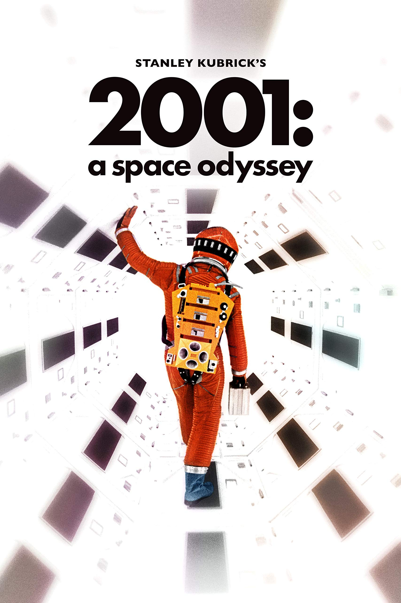
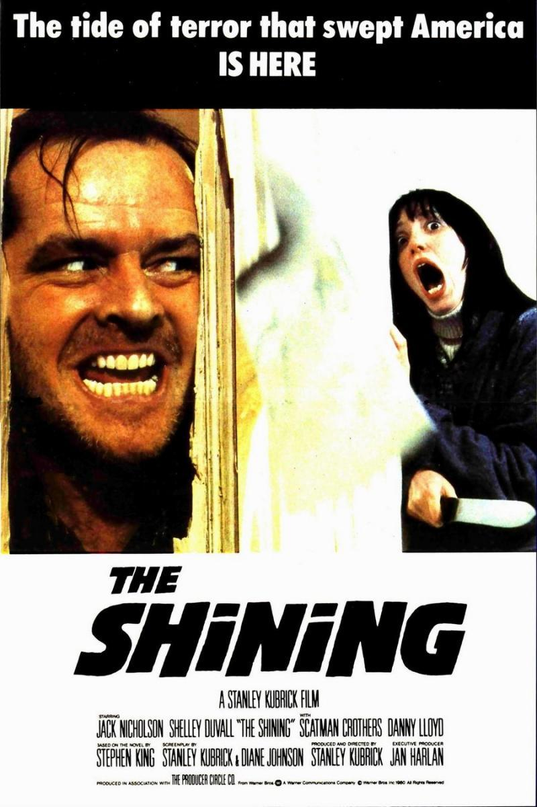
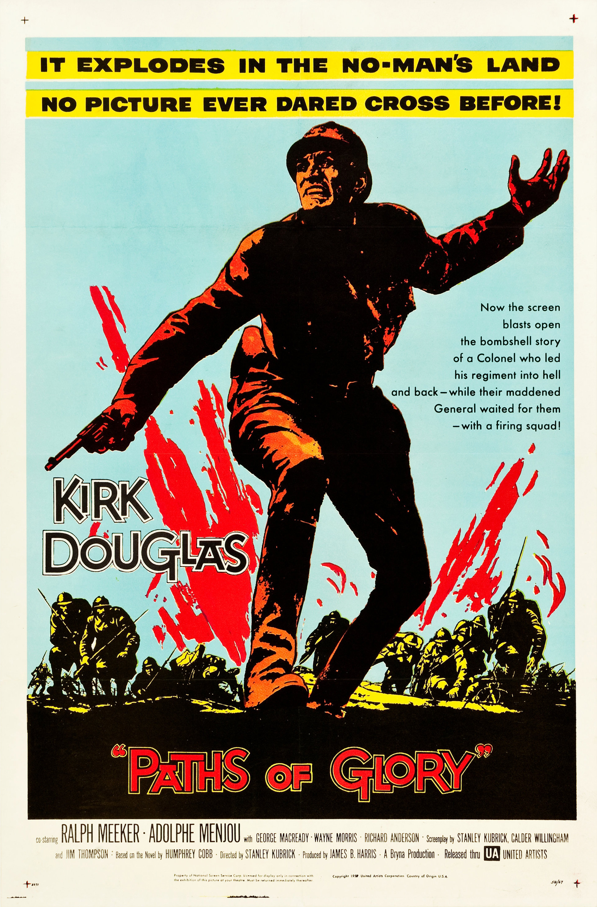

Año: 1968
Duración: 2h 29min
Puntuación: 8,3 / 10
Sinopsis: Tras su descubrimiento en África hace varias generaciones, los misteriosos monolitos conducen a la humanidad a un impresionante viaje a Júpiter, con la ayuda del superordenador HAL 9000.
Estrellas: Keir Dullea, Gary Lockwood, William Sylvester
Anécdota: La azafata que camina por la pared y el techo de la nave se logró fijando el set de modo que girara, manteniendo a la actriz segura con zapatos adherentes mientras la cámara giraba con ella.
Premios: Ganó 1 premio Óscar, 18 premios y 14 nominaciones en total.
Año: 1987
Duración: 1h 56min
Puntuación: 8,2 / 10
Sinopsis: Un marine estadounidense observa los efectos deshumanizadores que la guerra de Vietnam tiene sobre sus compañeros, desde su brutal instrucción en el campo de entrenamiento hasta los sangrientos combates callejeros en Hue.
Estrellas: Matthew Modine, R. Lee Ermey, Vincent D’Onofrio
Anécdota: R. Lee Ermey era un verdadero instructor de instrucción del Cuerpo de Marines. Originalmente, solo iba a ser asesor técnico, pero envió una cinta de vídeo en la que insultaba y gritaba a varios marines durante 15 minutos para demostrar que podía actuar.
Premios: Nominada a 1 premio Óscar, 8 premios y 15 nominaciones en total.

Año: 1980
Duración: 2h 26min
Puntuación: 8,4 / 10
Sinopsis: Una familia se dirige a un hotel aislado para pasar el invierno. Allí, una presencia espiritual maligna violenta al padre, mientras el hijo, psíquico, tiene horripilantes visiones del pasado y del futuro.
Estrellas: Jack Nicholson, Shelley Duvall, Danny Lloyd
Anécdota: Kubrick obligó a la actriz a llorar hasta 12 veces al día durante meses, llegando a aislarla del equipo y tratarla mal para lograr la fragilidad de Wendy. Repitió la escena del bate de béisbol más de 120 veces, provocándole tal estrés que se le caía el pelo.
Premios: Nominada a 2 premios Óscar, 6 premios y 9 nominaciones en total.

Año: 1957
Duración: 1h 28min
Puntuación: 8,4 / 10
Sinopsis: Tras negarse a atacar una posición enemiga, un general acusa a los soldados de cobardía y su oficial al mando debe defenderlos.
Estrellas: Kirk Douglas, Ralph Meeker, Adolphe Menjou
Anécdota: Esta película fue prohibida en España bajo el mandato del dictador Francisco Franco por su mensaje antimilitar. No se estrenó en España hasta 1986, 11 años después de la muerte de Franco.
Premios: Nominada a un premio BAFTA, 5 premios y 3 nominaciones en total.